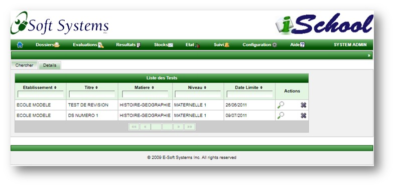
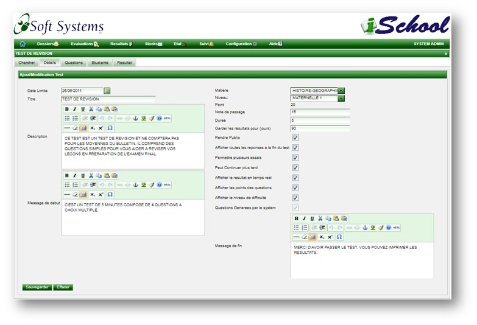
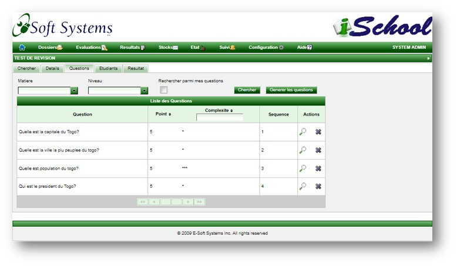
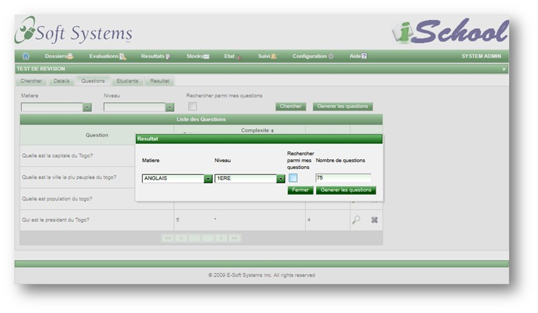
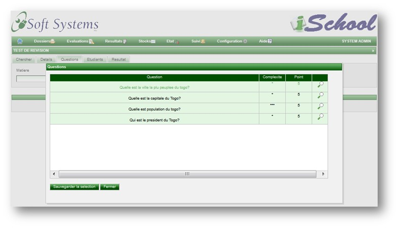
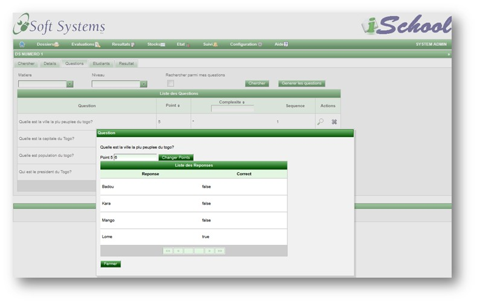
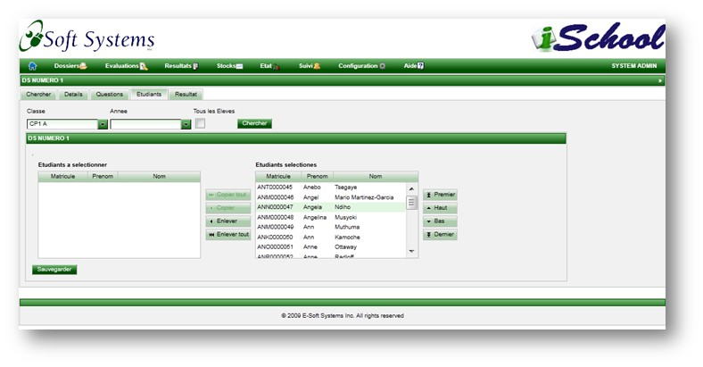
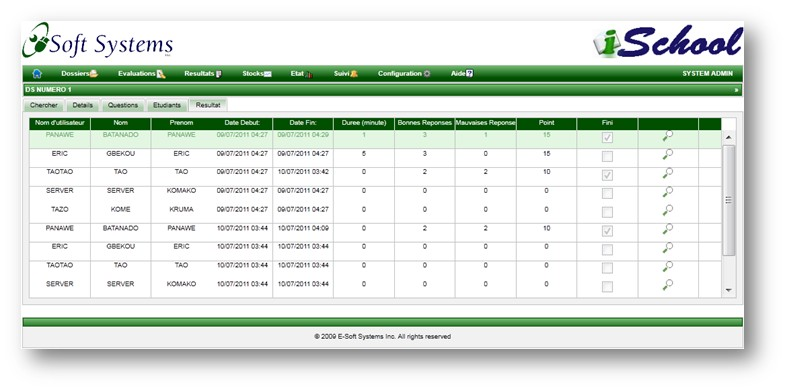
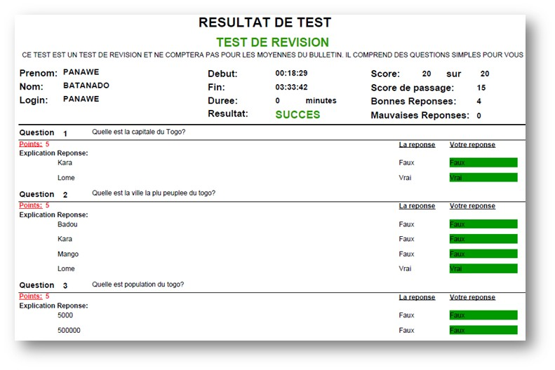

Test en Ligne
Cette page permet de creer un test, de l'assigner aux etudiants et d'en consulter les resultats.
Recherche.
Le recherche multi critere permet de retrouver rapidement un test soit par le titre, la matiere, le niveau, la date limite ou l'etablissement.

Details.
Un test est fortement configurable a travers les parametres ci-dessous.
- Date Limite: Cette date indique la date limite avant laquelle le test devra etre passe
- Titre: Indique le titre du test. Le titre est affiche sur la premiere page du test ainsi que sur la fiche de resultat.
- Description: La description du test est affichee sur la premiere page du test ainsi que sur la fiche de resultat.
- Message de debut: Le message debut est destine a afficher les instructions relatives au test sur la premiere page.
- Message de fin: Ce message est affiche a la fin du test au meme titre que les resultats du test.
- Matiere: La matiere a laquelle se rattache le test
- Niveau: Le niveau scolaire du test.
- Point: Le nombre total de points du test.
- Note de passage: La note de passage du test
- Duree: Duree maximale du test. Apres que cette duree soit expiree, le test est termine meme si le candidat ne l'a pas complete.
- Garder les resultats pour (jours): Ce parametre est utilise pour determiner le nombre de jours apres lequel les resultat du test son purges du systeme.
- Rendre Public: Lorsqu'un test est rendu public, il est visible a toutes les autres ecoles sur la plateforme.
- Afficher toutes les reponses a la fin du test: Permet a l'etudiant d'imprimer les resultats a la fin du test.
- Permettre plusieurs essais: Permet de definir si l'etudiant peut repasser le test a plusieurs reprises.
- Afficher le resultat en temps reel: Si cette option est choisie, le resultat du test est mis a jour au fur et a mesure que le candidat le passe.
- Peut continuer plus tard: Permet au candidat d'interrompre le test et de le continuer plus tard.
- Afficher les points des questions: Lorsque cette option est choisie, le nombre de points associes a une question est affiche au cours du test.
- Afficher le niveau de difficulte: Cette option permet d'afficher le niveau de difficulte des questions.
- Questions Generees par le systeme: Il est possible de demander au system de generer automatiquement les questions en specifiant le nombre. Cette option est automatiquement selectionnee dans ce cas.

Questions.
Liste des questions
Les questions d'un test sont soit choisis parmi une liste ou generees automatiquement par le systeme. Dans les deux cas de figure, une recherche multi criteres incluant la matiere, le niveau et l'utilisateur permet de cibler les questions tres rapidement.

Generation automatique des questions
La generation automatique des questions permet de specifier le nombre de questions a generer et de laisser le soins au systeme de les generer de facon aleatoire. Si le nombre de questions specifie est superieur au nombre maximum de questions satisfaisant les criteres de recherche, le maximum nombre de questions est genere.

Selection multiple des questions
Les questions peuvent etre selectionnees parmi une liste.

Changement de la note d'origine
La note d'origne de la question peut etre changee.

Etudiants.
Une recherche multi criteres incluant la classe et l'annee permet de filtrer les eleves et de leur assigner le test a passer.

Resultats.
Les resultats du test sont mis a jour au fur et a mesure que les etudiants passent le test et peuvent etre imprimes a tout moment en cliquant sur l'icone de la loupe.

Etat detaille du test.
A la fin du test l'etudiant peut imprimer les resultats detailles du test si la configuration le permet.

Copyright © 2011, E-Soft Systems Inc